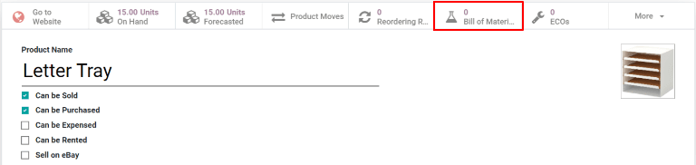
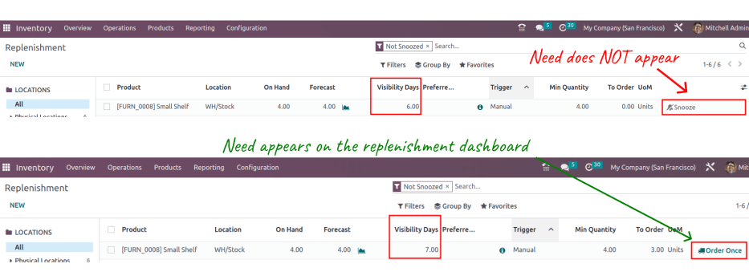

Reordering rules¶
Reordering rules are used to keep forecasted stock levels above a certain threshold without exceeding a specified upper limit. This is accomplished by specifying a minimum quantity that stock should not fall below and a maximum quantity that stock should not exceed.
Reordering rules can be configured for each product based on the route used to replenish it. If a product uses the Buy route, then a Request for Quotation (RFQ) is created when the reordering rule is triggered. If a product uses the Manufacture route, then a Manufacturing Order (MO) is created instead. This is the case regardless of the selected replenishment route.
Configure products for reordering rules¶
In order to use reordering rules for a product, it must first be correctly configured. Begin by navigating to , then select an existing product, or create a new one by clicking New.
On the product form, under the General Information tab, make sure that the Product Type is set to Storable Product. This is necessary because Odoo only tracks stock quantities for storable products, and this number is used to trigger reordering rules.

Next, click on the Inventory tab and select one or more routes from the Routes section. Doing so tells Odoo which route to use to replenish the product.

If the product is reordered using the Buy route, confirm that the Can be Purchased checkbox is enabled under the product name. This makes the Purchase tab appear. Click on the Purchase tab, and specify at least one vendor, and the price that they sell the product for, so that Odoo knows which company the product should be purchased from.
If the product is replenished using the Manufacture route, it needs to have at least one Bill of Materials (BoM) associated with it. This is necessary because Odoo only creates manufacturing orders for products with a BoM.
If a BoM does not already exist for the product, select the Bill of Materials smart button at the top of the product form, then click New to configure a new BoM.
Create new reordering rules¶
To create a new reordering rule, navigate to , then click New, and fill out the new line as follows:
Product: The product that is replenished by the rule.
Location: The location where the product is stored.
Min Quantity: The minimum quantity that can be forecasted without the rule being triggered. When forecasted stock falls below this number, a replenishment order for the product is created.
Max Quantity: The maximum quantity that stock is replenished up to.
Multiple Quantity: Specify if the product should be replenished in batches of a certain quantity (e.g., a product could be replenished in batches of 20).
UoM: The unit of measure used for reordering the product. This value can simply be
Unitsor a specific unit of measurement for weight, length, etc.

Tip
Reordering rules can also be created from each product form. To do so, navigate to , then select a product. Click on , then fill out the new line, as detailed above.
For advanced usage of reordering rules, learn about the following reordering rule fields:
Note
The fields above are not available by default, and must be enabled by selecting the (slider) icon in the far-right corner, and selecting the desired column from the drop-down menu.
Trigger¶
When stock falls below the reordering rule’s minimum, set the reordering rule’s trigger to automatic to automatically create purchase or manufacturing orders to replenish stock.
Alternatively, setting the reordering rule’s trigger to manual displays the product and forecasted stock on the replenishment dashboard, where the procurement manager can review the stock levels, lead times, and forecasted dates of arrival.
Tip
The Replenishment dashboard is accessible by going to .
To enable the Trigger field, go to . Then, click the (slider) icon, located to the far-right of the column titles, and enable the Trigger option from the additional options drop-down menu that appears.
In the Trigger column, select Auto or Manual. Refer to the sections below to learn about the different types of reordering rules.
Auto¶
Automatic reordering rules, enabled by setting the reordering rule’s Trigger field to Auto, generate purchase or manufacturing orders when:
the scheduler runs, and the On Hand quantity is below the minimum
a sales order is confirmed, and lowers the Forecasted quantity of the product below the minimum
Tip
The scheduler is set to run once a day, by default.
To manually trigger a reordering rule before the scheduler runs, ensure developer mode is enabled, and then select . Then, select the green Run Scheduler button on the pop-up window that appears.
Be aware that this also triggers any other scheduled actions.
Example
The product, Office Lamp, has an automatic reordering rule set to trigger when the forecasted
quantity falls below the Min Quantity of 5.00. Since the current
Forecast is 55.00, the reordering rule is not triggered.
If the Buy route is selected, then an RFQ is generated. To view and manage RFQs, navigate to .
If the Manufacture route is selected, then an MO is generated. To view and manage MOs, navigate to .
When no route is selected, Odoo selects the Route specified in the Inventory tab of the product form.
Manual¶
Manual reordering rules, configured by setting the reordering rule’s Trigger field to Manual, list a product on the replenishment dashboard when the forecasted quantity falls below a specified minimum. Products on this dashboard are called needs, because they are needed to fulfill upcoming sales orders, for which the forecasted quantity is not enough.
The replenishment dashboard, accessible by navigating to , considers sales order deadlines, forecasted stock levels, and vendor lead times. It displays needs only when it is time to reorder items.
Note
If the one-day window for ordering products is too short, skip to the visibility days section to make the need appear on the replenishment dashboard a specified number of days in advance.

Visibility days¶
Important
Ensure lead times are understood before proceeding with this section.
When manual reordering rules are assigned to a product, visibility days make the product appear on the replenishment dashboard () a certain number of days in advance.
Example
A product has a manual reordering rule set to trigger when the stock level falls below four units. The current on-hand quantity is ten units.
The current date is February twentieth, and the delivery date on a sales order (in the Other Info tab) is March third — twelve days from the current date.
The vendor lead time is four days, and the purchase security lead time is one day.
When the Visibility Days field of the reordering rule is set to zero, the product appears on the replenishment dashboard five days before the delivery date, which, in this case, is February twenty-seventh.

To see the product on the replenishment dashboard for the current date, February twentieth, set
the Visibility Days to 7.00.
To determine the number of visibility days needed to see a product on the replenishment dashboard, subtract today’s date from the date the need appears on the replenishment dashboard.
Example
Referring to the example above, today’s date is February twentieth, and the need for the product appears on February twenty-seventh.
(February 27 - February 20 = 7 days)
Incorrectly setting the Visibility Days fewer than seven days in this case results in the need not appearing on the replenishment dashboard.
Preferred route¶
Odoo allows for multiple routes to be selected under the Inventory tab on each product form. For instance, it is possible to select both Buy and Manufacture, thus enabling the functionality of both routes.
Odoo also enables users to set a preferred route for a product’s reordering rule. This is the route that the rule defaults to if multiple are selected. To select a preferred route, begin by navigating to or .
Click inside of the column on the row of a reordering rule, and a drop-down menu shows all available routes for that rule. Select one to set it as the preferred route.
Important
If multiple routes are enabled for a product but no preferred route is set for its reordering rule, the product is reordered using the selected route that is listed first on the Inventory tab of the product form.